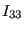
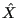
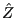

Next: User Element: 3-node shell Up: User Element: 3D Timoshenko Previous: Mass matrix in global Contents
Declare the usage of a user element:
*USER ELEMENT,TYPE=U1,NODES=2,INTEGRATION POINTS=2,MAXDOF=6Specify its properties
*BEAM SECTION, SECTION=GENERAL, ELSET=<elset_label>, MATERIAL=<Material>First line

,
-coordinate of local cross-section main axis
-coordinate of local cross-section main axis